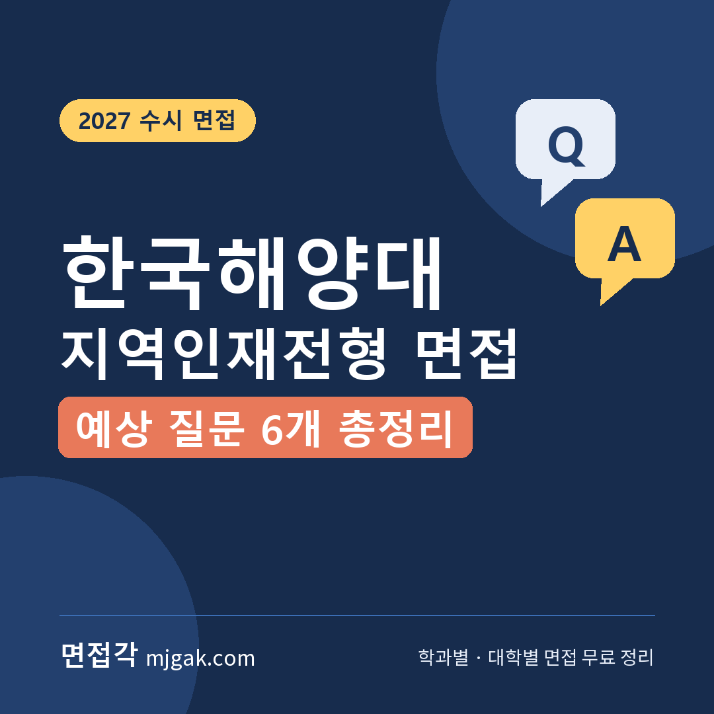
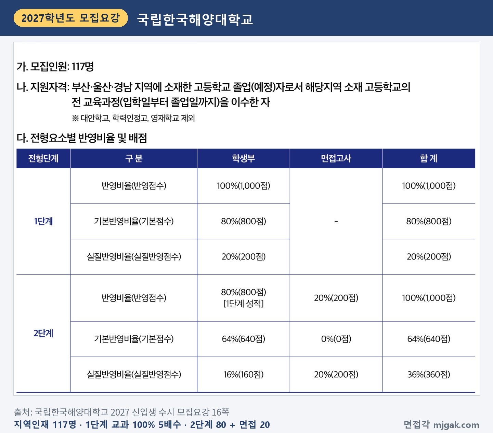
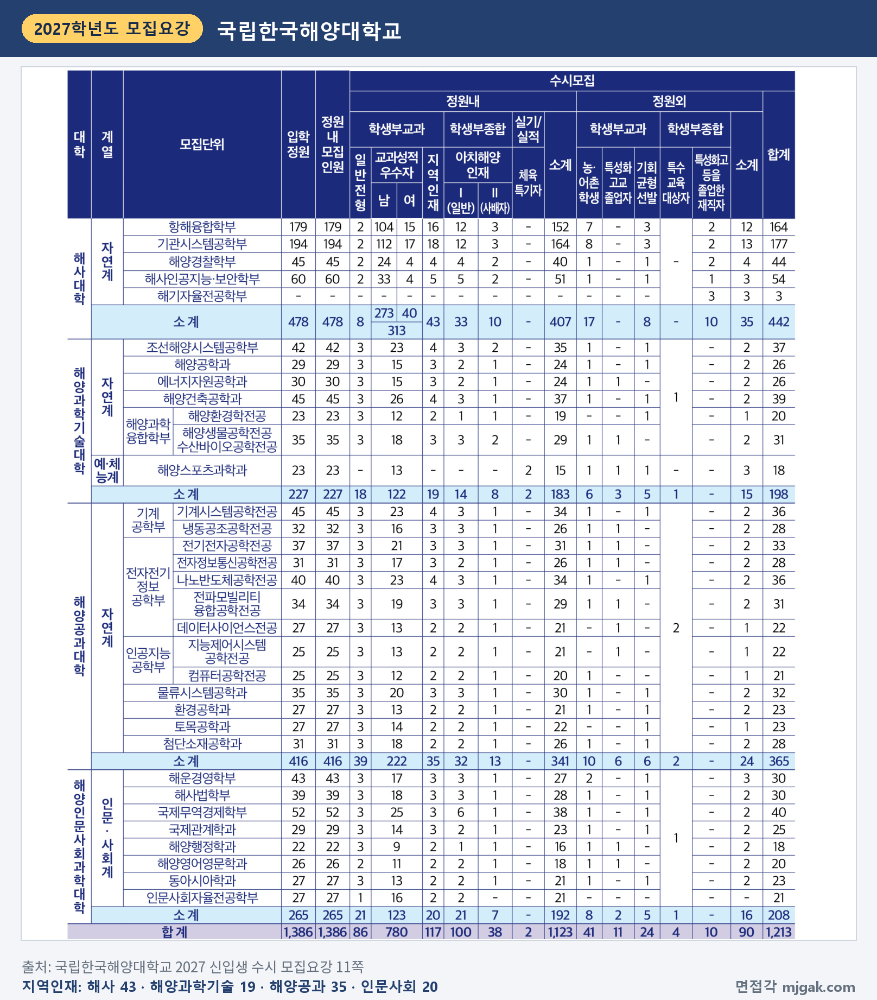
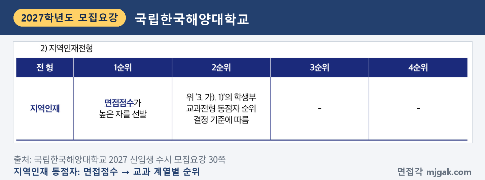
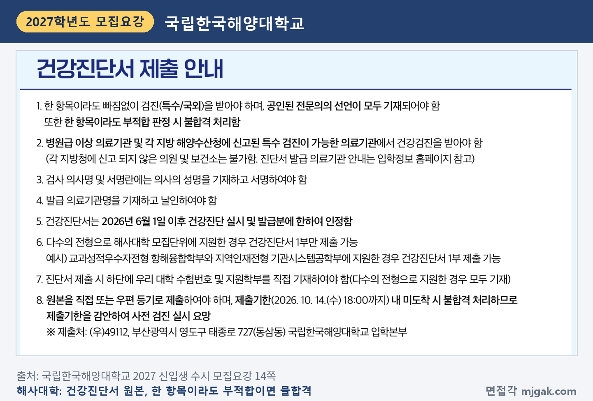
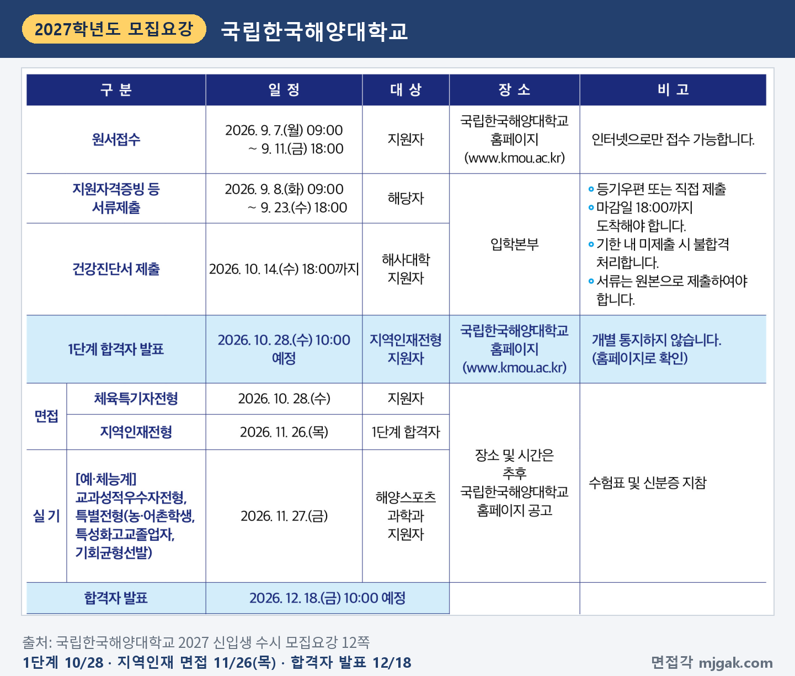
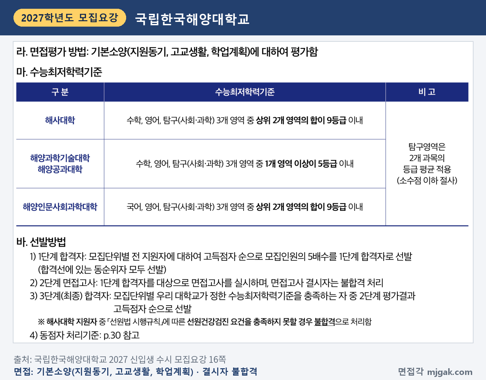
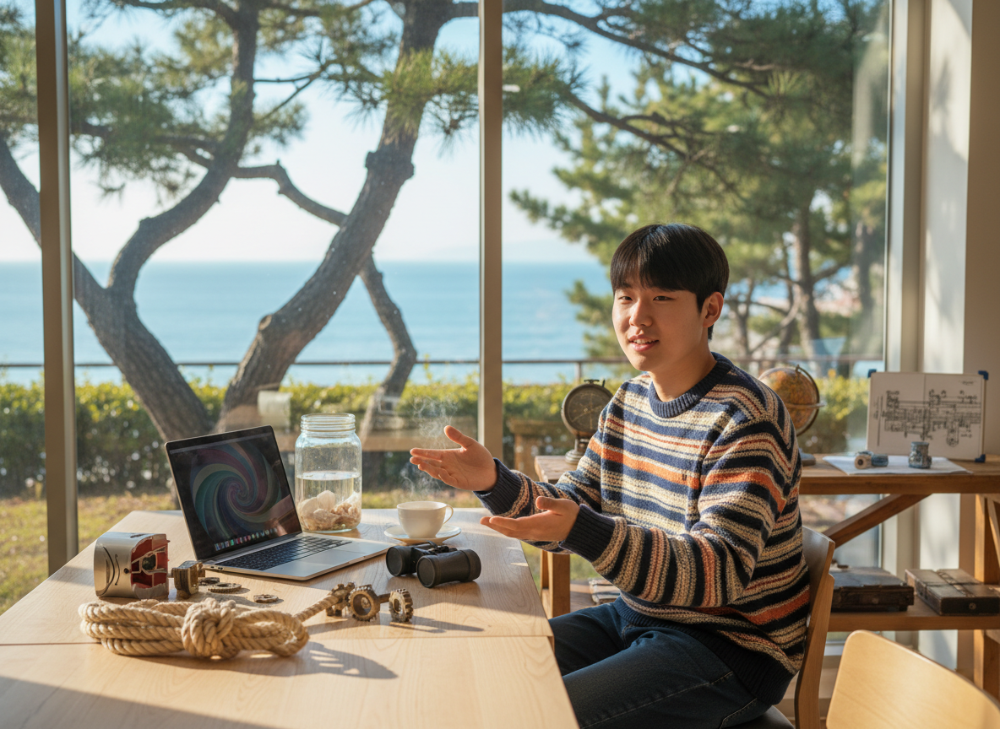
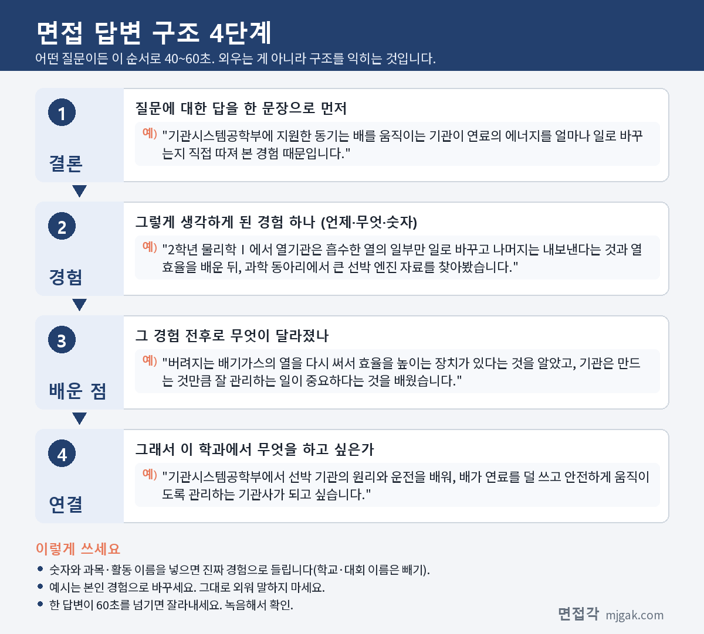

Ctrl+V (서식 유지됨)제목
본문 (이 영역 전체가 복사됩니다)
📷 여기에 이미지 넣기 — 썸네일 — thumb-kmou.png (대표 이미지로 지정)
국립한국해양대 지역인재전형에서 먼저 확인할 것은 면접이 수능 일주일 뒤라는 점입니다. 수능이 11월 19일(목), 면접이 11월 26일(목)이라 수능이 끝나고 면접까지 7일입니다(이 글에서 계산한 값). 1단계 합격자 발표는 10월 28일(수)이었고, 2단계는 1단계 성적 80%와 면접 20%를 합산한 뒤 수능최저학력기준을 충족한 사람 중에서 최종 합격자를 뽑습니다. 면접은 기본소양(지원동기, 고교생활, 학업계획)을 평가한다고만 적혀 있습니다. 이 글은 2027 국립한국해양대학교 신입생 수시 모집요강으로 전형 방법, 일정, 해사대학 지원자가 챙길 것, 예상 질문 6개와 답변법, 준비 순서를 정리했습니다. 지역인재전형 1단계 합격자가 읽으시면 됩니다.
1. 지역인재전형, 2027학년도에는 어떻게 보나
학생부교과 지역인재전형은 117명을 뽑습니다. 지원자격은 부산·울산·경남 지역에 소재한 고등학교 졸업(예정)자로서 해당지역 소재 고등학교의 전 교육과정(입학일부터 졸업일까지)을 이수한 사람이고, 대안학교·학력인정고·영재학교는 제외합니다(16쪽).
1단계는 학생부 교과 100%(1,000점)로 모집인원의 5배수를 뽑고, 합격선에 있는 동순위자는 모두 선발합니다. 2단계는 1단계 성적 80%(800점)와 면접고사 20%(200점)를 합산합니다. 2단계 실질반영점수는 학생부 160점, 면접 200점이라 실질 점수로는 면접 쪽이 큽니다(16쪽). 이 글에서 계산하면 이 글에서 계산하면 모집단위별 5배수를 더한 값은 585명입니다. 지원자 수와 동순위자에 따라 실제 인원은 달라질 수 있습니다.
📷 여기에 이미지 넣기 — 캡처 1 — 국립한국해양대학교 2027 신입생 수시 모집요강 16쪽: kmou-2027-jiyeok-method.png
모집단위별 인원은 해사대학 43명(항해융합학부 16, 기관시스템공학부 18, 해양경찰학부 4, 해사인공지능·보안학부 5), 해양과학기술대학 19명, 해양공과대학 35명, 해양인문사회과학대학 20명입니다(11쪽).
📷 여기에 이미지 넣기 — 캡처 2 — 국립한국해양대학교 2027 신입생 수시 모집요강 11쪽: kmou-2027-units.png
수능최저학력기준은 단과대학마다 다릅니다(16쪽).
- 해사대학: 수학, 영어, 탐구(사회·과학) 중 상위 2개 영역 합 9등급 이내
- 해양과학기술대학·해양공과대학: 수학, 영어, 탐구(사회·과학) 중 1개 영역 이상 5등급 이내
- 해양인문사회과학대학: 국어, 영어, 탐구(사회·과학) 중 상위 2개 영역 합 9등급 이내
탐구는 2과목 등급 평균을 쓰고 소수점 이하는 버립니다(16쪽).
면접고사 결시자는 불합격입니다(16쪽). 동점자는 면접점수가 높은 사람을 먼저 뽑고, 그다음은 학생부 교과 계열별 순위(자연계 수학·영어·과학·국어, 인문·사회계 영어·국어·수학·사회)를 따릅니다(30쪽). 학교폭력 조치사항은 2단계(1,000점 만점)에서 1~3호 30점, 4~7호 50점, 8호 70점, 9호 100점을 감점합니다(34쪽).
📷 여기에 이미지 넣기 — 캡처 3 — 국립한국해양대학교 2027 신입생 수시 모집요강 30쪽: kmou-2027-tie.png
2. 해사대학 지원자는 건강진단이 합격 조건입니다
해사대학 지원자 중 「선원법 시행규칙」에 따른 선원건강검진 요건을 충족하지 못하는 사람은 불합격입니다(16쪽). 건강진단서 원본은 10월 14일(수) 18:00까지 도착해야 했고, 한 항목이라도 부적합 판정이면 불합격입니다(14쪽). 기한 안에 냈더라도 결과가 모두 적합이어야 요건을 충족하고, 도착 여부는 입학정보 홈페이지 「건강진단서 제출서류 확인」에서 조회할 수 있습니다(14쪽).
📷 여기에 이미지 넣기 — 캡처 4 — 국립한국해양대학교 2027 신입생 수시 모집요강 14쪽: kmou-2027-health.png
3. 언제 보나: 수능 일주일 뒤 11월 26일 면접
- 10월 28일(수) 10:00 예정: 1단계 합격자 발표, 홈페이지(개별 통지하지 않음)
- 11월 19일(목): 수능
- 11월 26일(목): 지역인재전형 면접, 장소와 시간은 추후 홈페이지 공고
- 12월 18일(금) 10:00 예정: 합격자 발표
- 12월 21일(월) 09:00 ~ 23일(수) 16:00: 합격자 등록(문서등록)
면접 때는 수험표와 신분증을 지참합니다(12쪽).
📷 여기에 이미지 넣기 — 캡처 5 — 국립한국해양대학교 2027 신입생 수시 모집요강 12쪽: kmou-2027-schedule.png
4. 면접은 어떻게 보나
면접평가 방법은 "기본소양(지원동기, 고교생활, 학업계획)에 대하여 평가함" 한 줄입니다(16쪽). 1인당 면접 소요 시간, 면접위원 수, 세 항목의 배점, 블라인드 방식, 복장 규정은 모집요강에 적혀 있지 않습니다. 대신 면접고사 때 대학 전형 관계자의 지시에 따르지 않으면 불이익 처분을 받을 수 있다고 적혀 있습니다(35쪽).
📷 여기에 이미지 넣기 — 캡처 6 — 국립한국해양대학교 2027 신입생 수시 모집요강 16쪽: kmou-2027-jiyeok-interview.png
5. 기본소양 3가지에서 나올 예상 질문 6개와 답변법
국립한국해양대는 모집요강에 면접 질문 예시를 공개하지 않았습니다. 아래 6개는 평가 항목인 지원동기(2개), 고교생활(3개), 학업계획(1개)에 맞춰 정리한 예상 질문입니다. 예시 답변은 모집단위를 바꿔 쓴 가상의 예시이니 본인 경험으로 바꾸세요.
▶ 질문 1. 이 학부에 지원한 동기를 말해 보세요. (지원동기)
왜 묻나: 평가 항목 '지원동기'를 그대로 옮긴 예상 질문입니다. 가장 먼저 60초 답을 완성하세요.
답변 구조: 동기 한 문장 → 그 마음을 확인한 수업·활동 장면 → 알게 된 것 → 학부에서 배울 것.
답변 예시 (기관시스템공학부):
"기관시스템공학부에 지원한 동기는 배를 움직이는 기관이 연료의 에너지를 얼마나 일로 바꾸는지 직접 따져 본 경험 때문입니다. 2학년 물리학Ⅰ에서 열기관은 흡수한 열의 일부만 일로 바꾸고 나머지는 내보낸다는 것과 열효율을 배운 뒤, 과학 동아리에서 큰 선박 엔진 자료를 찾아봤습니다. 버려지는 배기가스의 열을 다시 써서 효율을 높이는 장치가 있다는 것을 알았고, 기관은 만드는 것만큼 잘 관리하는 일이 중요하다는 것을 배웠습니다. 기관시스템공학부에서 선박 기관의 원리와 운전을 배워, 배가 연료를 덜 쓰고 안전하게 움직이도록 관리하는 기관사가 되고 싶습니다."
주의: "바다가 좋아서"로 끝내지 마세요. 학년, 과목, 장면 하나를 넣습니다.
▶ 질문 2. 그 분야에서 하는 일을 어떻게 알게 됐나요? (지원동기)
왜 묻나: '지원동기'의 두 번째 질문으로, 지원한 분야를 스스로 알아본 과정을 확인하는 예상 질문입니다.
답변 구조: 관심이 생긴 계기 → 직접 찾아본 방법 → 알게 된 일 → 그래서 이 학부를 고른 이유.
답변 예시 (해양경찰학부):
"1학년 통합사회에서 국가가 국민의 안전을 지키는 역할을 배우며 바다 사고 기사를 모아 봤는데, 바다에서는 신고 뒤 현장에 닿기까지 시간이 오래 걸린다는 점이 눈에 들어왔습니다. 그래서 해양경찰이 바다에서의 구조와 치안, 해양 오염 대응까지 맡는다는 것을 찾아 정리해 반에서 발표했습니다. 같은 경찰이어도 바다라는 현장을 알아야 한다는 것을 느껴 해양경찰학부를 골랐습니다."
주의: 학부의 교육과정이나 졸업 뒤 제도를 말하려면 학과 안내에서 확인한 것만 말하세요.
▶ 질문 3. 고등학교 생활에서 가장 열심히 한 활동과 맡은 일은 무엇인가요? (고교생활)
왜 묻나: 평가 항목 '고교생활'과 연결한 예상 질문입니다. 모둠 활동이었다면 내 역할을 내 말로 설명해야 합니다.
답변 구조: 활동 주제 → 내가 맡은 일 → 막힌 점과 해결 → 결과 → 배운 점.
답변 예시 (컴퓨터공학전공):
"2학년 정보 시간에 반 친구들의 독서 기록을 정리하는 프로그램을 만들었고, 저는 같은 책이 두 번 입력되면 알려 주는 기능을 맡았습니다. 처음에는 띄어쓰기만 달라도 다른 책으로 인식해서, 공백을 모두 지운 뒤 비교하도록 코드를 고쳤습니다. 그 뒤로 같은 책이 두 번 세어지는 일이 사라져 학급 독서 통계가 정확해졌습니다. 작은 오류 하나가 결과 전체를 바꾼다는 것을 배웠습니다."
주의: "저희 모둠은"으로 시작하면 내 역할이 흐려집니다. "저는 ○○을 맡았습니다"로 시작하세요.
📷 여기에 이미지 넣기 — 이미지 1 — 제미나이 생성: 창밖으로 해송과 바다가 보이는 늦가을 캠퍼스 라운지에서 밧줄 매듭·금속 기어·노트북·바닷물 유리병·쌍안경 옆에서 답하는 학생(실사) / "제미나이 프롬프트 1" · gem-kmou-1.png
(AI로 만든 이미지로, 실제 캠퍼스와 다를 수 있습니다)
▶ 질문 4. 친구들과 함께 문제를 해결한 경험이 있나요? (고교생활)
왜 묻나: '고교생활'과 연결한 두 번째 예상 질문입니다. 문제가 무엇이었고 내가 무엇을 했는지 순서대로 말합니다.
답변 구조: 상황과 문제 → 내가 제안한 것 → 함께 한 일과 결과 → 바뀐 생각.
답변 예시 (해운경영학부):
"2학년 학교 축제에서 학급 음료 부스를 맡았는데, 첫날 인기 음료는 일찍 떨어지고 다른 음료는 많이 남았습니다. 저는 판매 기록을 시간대별로 정리하자고 제안했고, 친구 두 명과 그 기록을 보며 둘째 날 준비량을 음료별로 다시 나눴습니다. 둘째 날에는 남는 음료가 크게 줄었습니다. 필요한 곳에 필요한 만큼 보내려면 기록이 먼저라는 것을 배워 물건을 나르는 해운 산업에 관심이 커졌습니다."
주의: 내가 이긴 이야기가 아니라, 친구들과 함께 바꾼 과정을 넣으세요.
▶ 질문 5. 가장 어려웠던 과목은 무엇이고 어떻게 공부했나요? (고교생활)
왜 묻나: '고교생활' 중 학업 태도와 연결한 예상 질문입니다. 어려웠던 이유와 바꾼 방법이 핵심입니다.
답변 구조: 어려웠던 과목과 이유 → 바꾼 공부 방법 → 결과 → 앞으로의 쓰임.
답변 예시 (해양환경학전공):
"2학년 지구과학Ⅰ의 해수의 염분 부분이 가장 어려웠습니다. 바다마다 염분이 다른 이유를 외우기만 해서 그래프 문제를 자주 틀렸습니다. 그래서 염분을 높이는 요인(증발, 결빙)과 낮추는 요인(강수, 강물 유입, 해빙)을 표로 나누고, 그래프마다 어느 쪽이 큰지 적어 봤습니다. 그 뒤로 위도 30° 부근 표층 염분이 높은 이유를 증발량이 강수량보다 많아서라고 설명할 수 있게 됐습니다. 해양환경학전공에서도 원인부터 나눠 보는 습관으로 공부하겠습니다."
주의: 남 탓으로 돌리지 말고, 내가 바꾼 방법을 중심에 두세요.
▶ 질문 6. 입학하면 어떤 공부를 하고 싶나요? (학업계획)
왜 묻나: 평가 항목 '학업계획'과 연결한 예상 질문입니다. 고교에서 공부한 과목과 이어서 말해야 계획이 구체적으로 들립니다.
답변 구조: 하고 싶은 공부 한 문장 → 관심이 생긴 수업 장면 → 입학 후 해 볼 일 → 기대하는 모습.
답변 예시 (항해융합학부):
"배의 위치와 진로를 정확히 계산하는 공부를 가장 먼저 제대로 하고 싶습니다. 3학년 기하에서 평면벡터를 배우며, 물 위에서 배가 실제로 움직이는 방향은 배의 속도와 해류의 속도를 더한 벡터라는 예제를 풀었습니다. 해류가 옆에서 밀면 뱃머리 방향과 실제 진행 방향이 달라진다는 것이 흥미로웠습니다. 입학하면 항해에 필요한 계산을 익히고 영어도 꾸준히 공부해, 안전하게 배를 이끄는 항해사가 되고 싶습니다."
주의: 해사대학 학부의 전공 배정은 입학 후 대학이 정한 기준에 따른다고 적혀 있으니(11쪽), 세부 전공 이름과 교육과정은 학과 안내에서 확인한 것만 말하세요.
6. 답변은 이 4단계로 만드세요
어떤 질문이든 결론 → 경험 → 배운 점 → 연결 순서로 40~60초 안에 말하세요. 1인당 면접 소요 시간이 모집요강에 없으니 답 하나가 1분을 넘지 않게 연습합니다. 아래 도식은 질문 1을 4단계로 쪼갠 것입니다.
📷 여기에 이미지 넣기 — 도식 — structure-kmou.png
7. 체육특기자전형(요트)도 면접이 있습니다
체육특기자전형은 해양스포츠과학과 2명을 요트(윈드서핑 포함) 종목으로 뽑고, 입상실적 50%, 학생부 교과 10%, 출석 10%, 면접고사 30%(300점)를 일괄합산합니다(11·21쪽). 면접은 학생으로서의 기본자질, 수학계획 및 잠재력을 평가하고, 면접고사 불참자와 면접 성적 180점 미만자는 불합격입니다(22쪽). 면접일은 10월 28일(수)이었습니다(12쪽).
8. 10월 31일(토)부터 면접 당일까지 준비 순서
10월 31일(토) ~ 11월 18일(수): 수능 공부가 먼저이니 주말에 조금씩 합니다. 학생부를 처음부터 읽고 수업 장면 두 개, 활동 세 개를 골라 "왜 시작했나, 내가 한 일, 막힌 점, 다음에 한 일"을 한 줄씩 적습니다. 질문 1과 질문 6의 초안을 만듭니다.
11월 19일(목): 수능.
11월 20일(금) ~ 22일(일): 가채점으로 내 단과대학의 수능 최저 충족 여부를 확인합니다. 질문 3·4·5를 다른 활동으로도 답해 봅니다.
11월 23일(월) ~ 24일(화): 모의 면접을 녹음하고 60초를 넘는 답을 줄입니다. 홈페이지에서 면접 장소와 시간 공고를 확인합니다.
11월 25일(수): 수험표와 신분증을 챙기고 가는 길을 확인합니다. 새 답변은 만들지 않습니다.
11월 26일(목), 면접: 일찍 도착하고, 전형 관계자의 안내를 따릅니다.
12월 18일(금) 10:00 예정: 합격자 발표. 합격했다면 12월 21일(월) 09:00 ~ 23일(수) 16:00 문서등록을 놓치지 마세요(12쪽).
9. 한국해양대 지역인재 면접 자주 묻는 것들
Q. 면접 시간과 장소는 언제 알 수 있나요?
A. 장소와 시간은 추후 국립한국해양대학교 홈페이지에 공고한다고 적혀 있습니다(12쪽). 입학전형 관련 사항은 개별 통보하지 않으니 홈페이지에서 직접 확인하세요(35쪽).
Q. 다른 전형에도 같이 지원했는데 괜찮나요?
A. 12쪽에는 전형 간 복수지원이 최대 6회까지 가능하고, 동일 전형(아치해양인재전형 Ⅰ·Ⅱ) 안에서는 복수지원할 수 없다고 적혀 있습니다. 이 6회는 다른 대학 지원 횟수를 포함한 수시 전체 횟수입니다(35쪽). 입학원서 접수 뒤에는 지원을 취소하거나 모집단위를 바꿀 수 없습니다(35쪽).
Q. 해사대학 건강진단서는 여러 전형에 지원해도 한 장이면 되나요?
A. 여러 전형으로 해사대학 모집단위에 지원했다면 1부만 내도 되고, 진단서 하단에 수험번호와 지원학부를 모두 적어야 합니다(14쪽).
Q. 면접 복장은 어떻게 하나요?
A. 모집요강에 복장 규정은 없습니다. 지참물은 수험표와 신분증입니다(12쪽).
Q. 졸업예정자로 합격하면 따로 낼 서류가 있나요?
A. 2027년 2월 23일(화) 18:00까지 고교 졸업증명서를 내야 하고, 입학일부터 졸업일까지 부산·울산·경남권에 재학하지 않으면 합격이 취소될 수 있습니다(17쪽).
10. 면접 전날 체크리스트
□ 지원동기를 수업·활동 장면 하나와 함께 60초 안에 말할 수 있다
□ 지원한 분야의 일을 어떻게 알아봤는지 말할 수 있다
□ 고교생활에서 내가 맡은 일과 막힌 점, 해결을 말할 수 있다
□ 입학 후 공부 계획을 고교 과목과 이어 말할 수 있다
□ 녹음으로 60초를 넘는 답을 줄였다
□ 홈페이지 공고에서 면접 장소와 시간을 확인했다
□ 수험표와 신분증을 챙겼다
11. 같은 시기에 면접 보는 대학
한국해양대와 같이 지원했다면 이어서 보세요.
▷ 경상국립대 학생부종합 일반전형(면접) 총정리 (11월 25일·26일)
▷ 전북대 큰사람전형 면접 총정리 (11월 26일, 지역인재 11월 28일)
▷ 부산대 학생부종합전형·지역인재전형 면접 총정리 (12월 5일)
12. 함께 보면 좋은 글
지역인재전형 면접은 지원동기, 고교생활, 학업계획을 내 학교생활의 장면으로 설명하고, 그 경험이 지원한 학부로 어떻게 이어지는지 보여 주는 자리입니다.
※ 이 글의 내용은 2027 국립한국해양대학교 신입생 수시 모집요강에서 인용했습니다. 괄호 안 쪽수는 모집요강에 인쇄된 쪽수입니다. 예상 질문은 모집요강의 면접평가 방법(기본소양)을 바탕으로 정리한 것이며 대학이 공개한 질문이 아닙니다. 면접 장소와 시간은 국립한국해양대 홈페이지 공고를 꼭 확인하세요.
한국해양대를 포함한 76개 대학의 2027학년도 면접 정보와 71개 학과별 면접 질문·답변 예시, 대학이 공개한 실제 면접 기출을 무료로 정리한 사이트입니다. 회원가입 없이 바로 볼 수 있고, 질문을 무작위로 뽑아 60초 타이머로 연습하는 모의 면접도 있습니다.
태그 (#은 에디터가 자동으로 붙이므로 그대로 붙여 넣어도 됩니다)
넣을 이미지 목록 (docs/promo/img 폴더)









제미나이 프롬프트 1 — 창밖으로 해송과 바다가 보이는 늦가을 캠퍼스 라운지에서 밧줄 매듭·금속 기어·노트북·바닷물 유리병·쌍안경 옆에서 답하는 학생(실사) (4:3) — 제미나이에 그대로 붙여 넣어 이미지를 만드세요